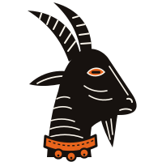

Essays
Articles

The shape of behaviour
From booleans pretending to be states, through Harel's hierarchy, orthogonality and history, to the SCXML algorithm, a pure step function, and five charts a Lean proof found that no test had built.

The goat does not choose the play
Where a language model belongs in a program: at a choice point, picking among the moves a chart offers, with every answer journaled so the run replays without any model.
A protocol a stranger can check
Kolyada, Vertep's layer of role-based agent protocols: one document says who sends what to whom, its hash names it, every message is signed, and any party can check every step without trusting anyone.
Two hands on one chart
Co-designing statecharts with Claude Code and Vertepnyk: the agent writes and checks the text, you shape and run the chart on a canvas, and Vertep's engine is the referee for both.